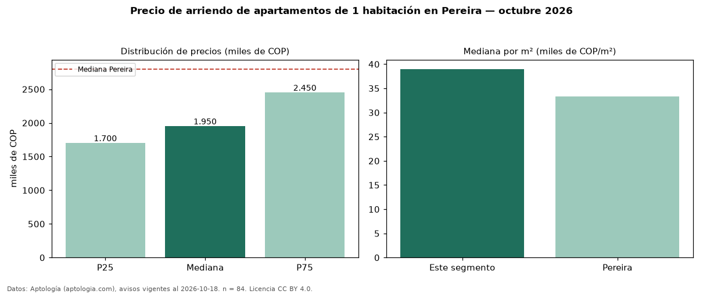

Precio de arriendo de apartamentos de 1 habitación en Pereira — octubre 2026
En Pereira, la mediana de canon mensual de apartamentos de 1 habitación es COP 1,95 millones, según 84 avisos vigentes. Eso es 30 % por debajo de la mediana de todos los apartamentos en arriendo de Pereira (COP 2,80 millones). Por metro cuadrado, la mediana es COP 39.000/m² al mes (n = 83 avisos con área). Con el precio por m² de venta del mismo segmento (COP 7,00 millones/m²), la rentabilidad bruta implícita es 6,7 % anual (aproximación con medianas de ofertas distintas). El área mediana anunciada es 50 m². La administración mediana declarada es COP 303.500 al mes (n = 52), aparte del canon. El estrato más frecuente es 6 (76 % de los avisos con estrato). 95 % de los avisos con el dato declara parqueadero o cochera. Datos: Aptología (aptologia.com), CC BY 4.0 — https://www.aptologia.com/arriendo/pereira. Archivos: PDF, CSV con las cifras y gráfica PNG.

| Avisos únicos | 84 |
|---|---|
| Percentil 25 | COP 1.700.000 |
| Mediana | COP 1.950.000 |
| Percentil 75 | COP 2.450.000 |
| Mediana por m² | COP 39.000 |
Fuente: avisos vigentes de portales inmobiliarios recopilados por Aptología, deduplicados (mínimo 30 avisos únicos por celda). Precios pedidos, no cerrados. Fecha: 2026-10-18.